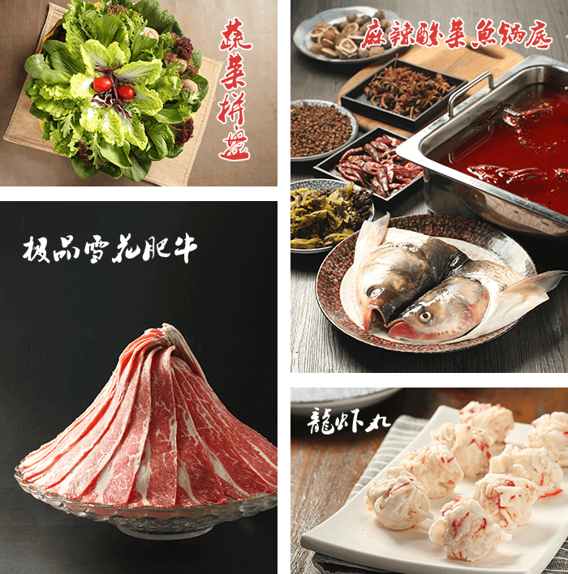
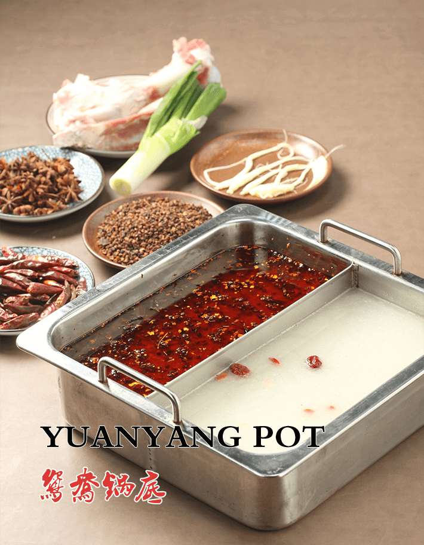
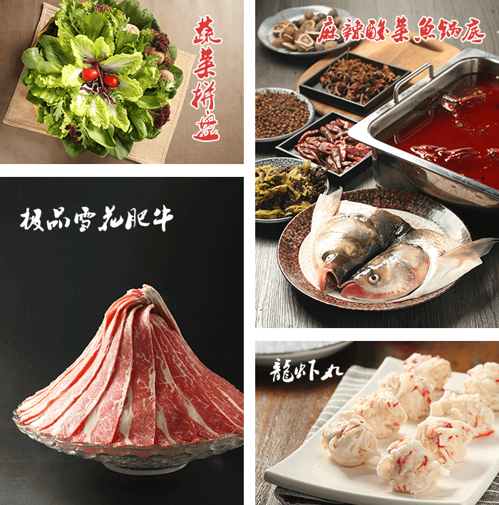
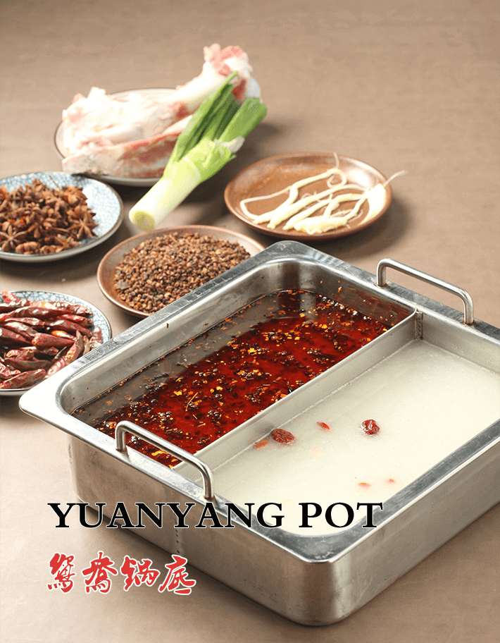

企业文化
corporate culture
- A、服务理念：迅速反应，马上行动！
- B、核心竞争力：优越的品质，标准的模式，卓越的团队
- C、营销理念：诚实守信，责任担当，体现价值
- D、经营理念：做受人尊敬的企业品牌
企业简介
Enterprise Resume
小二哥火锅，由三国时巴蜀江州（今重庆磁器口）人氏赵志玄始创，因祖传秘制红泥火锅而享誉乡里。赤壁之战（公元208年）后，蜀汉开国皇帝刘备，慕名来该店品尝后直呼“简直是传奇”，当即赐封“传奇小二哥火锅”牌匾。从此小二哥火锅风靡大江南北，鼎盛时分号达两百多家。
民国十年（1921），赵志玄后裔赵晓罡在成都市龙须街开启“小二哥火锅酒馆”，凭借祖传秘方，每天门庭若市，欲得小二哥一席须提前一周预订。此后二十来年，小二哥遍布川渝各地。惜在抗战时期，小二哥火锅销声匿迹。
改革开放以来，以赵剑华、邹东、何兴伟为核心的创业团队，不忍民族美食瑰宝消失，立志重振火锅市场，在重新挖掘、整理传奇小二哥火锅秘方的基础上，研发出底料、菜品、调料等一系列独有秘方。几家店经过十几年的经营，得到广大顾客的一致认可，于是在2014年经国家工商局同意，成功注册了“传奇小二哥”火锅品牌。
如今，全国独一无二的传奇小二哥火锅连锁系统研发完成，并经几年的测试和完善日渐成熟。抱团、加盟、直营工作已面向全国铺开。传奇小二哥火锅，期待与各界志士名流一道，书写出新时代传奇火锅的传奇华章。

企业文化
corporate culture
店铺展示
Shop display
传奇小二哥火锅店：东阳店 横店店 永康店
 


